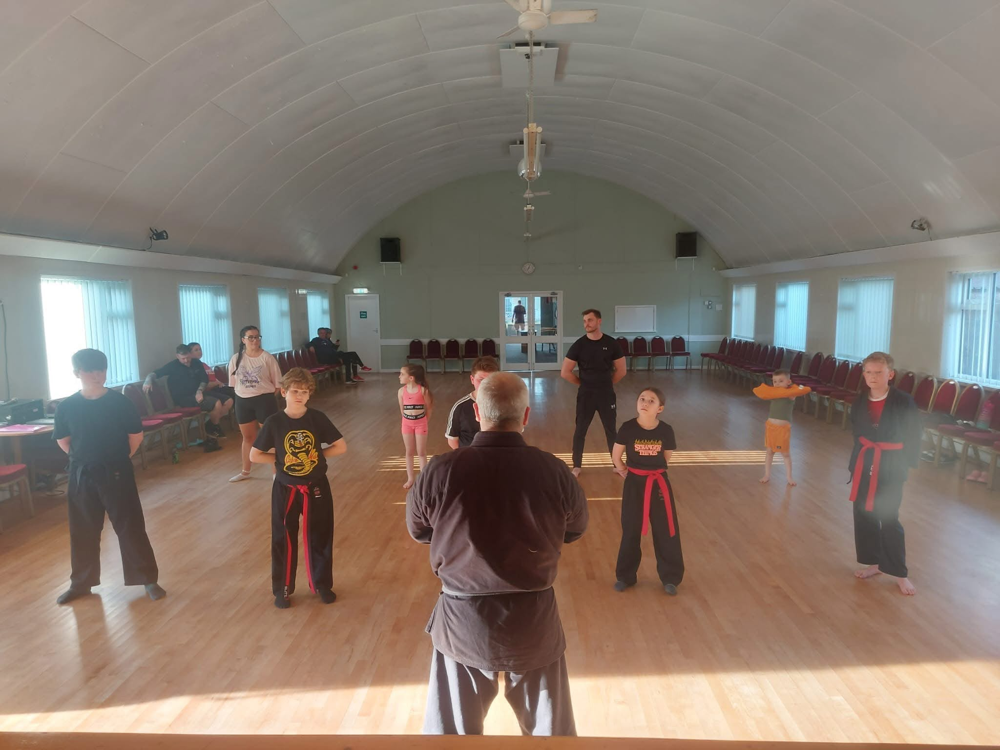
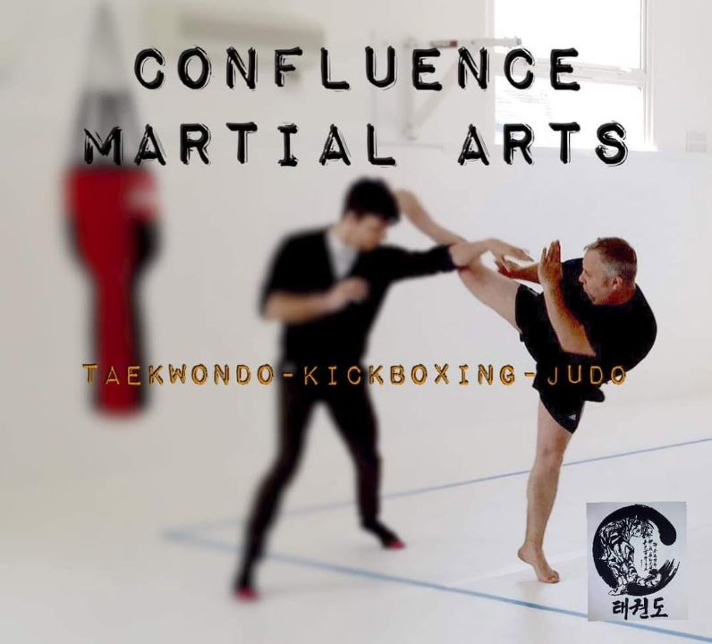
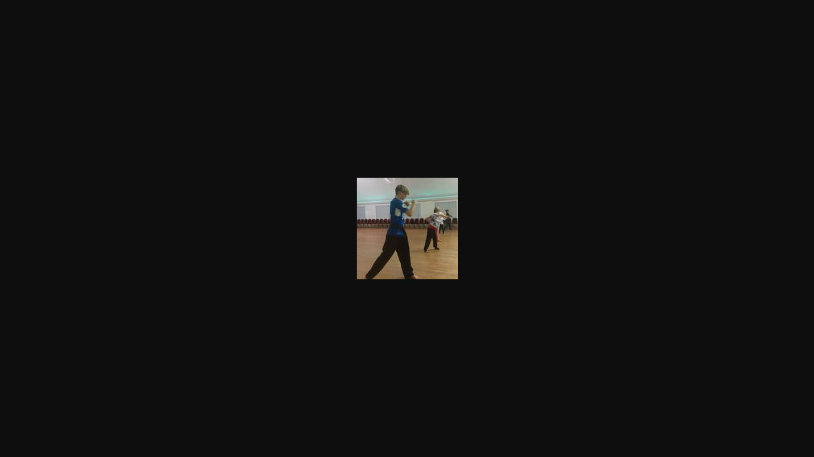
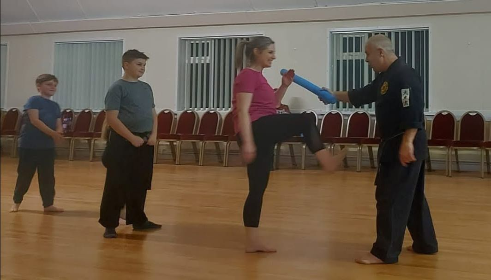
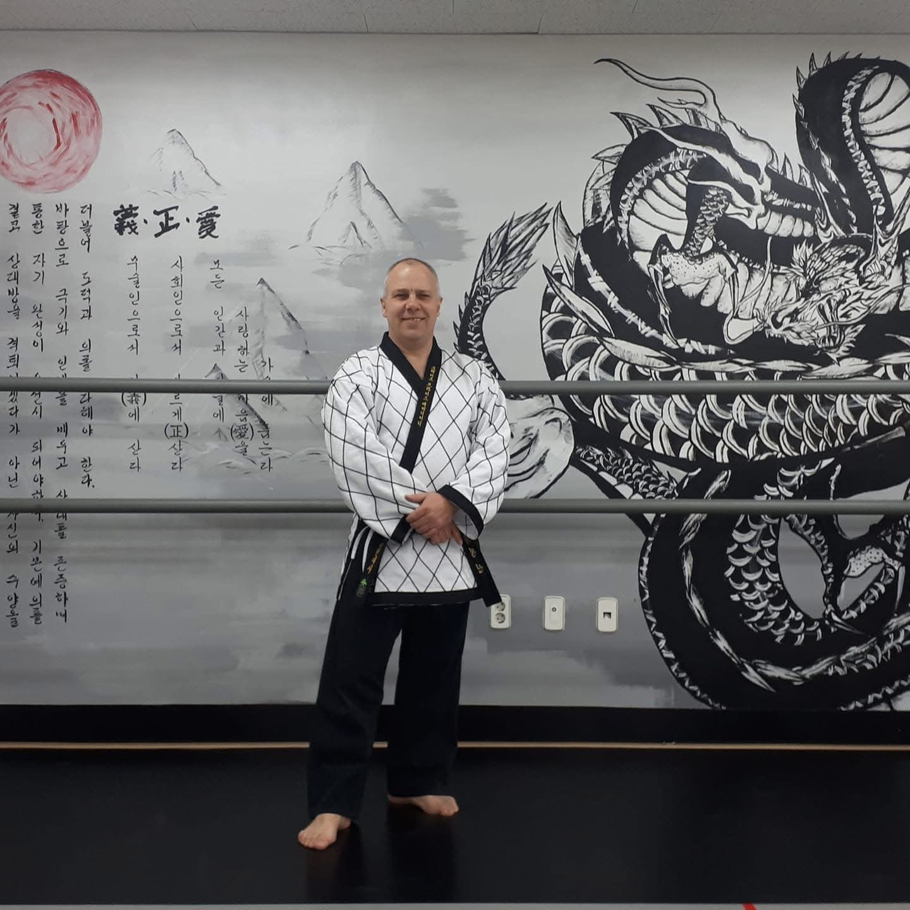
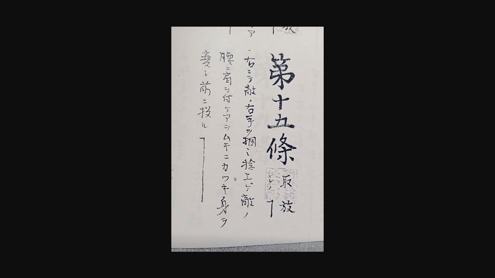

Gallery
Jujutsu Training Gallery — Moments from the Dojo in Thornton-Cleveleys
A glimpse into life at Confluence Martial Arts.





Fun and structured classes for all ages and abilities at Cleveleys Citizens Hall
Confluence Martial Arts brings together the depth of traditional Japanese martial arts with a modern, accessible approach to training.
At Confluence Martial Arts, we believe martial arts is for everyone. Our classes blend the rich traditions of Daito-ryu jujutsu and Takeuchi Renshinkan with a welcoming, structured environment suitable for all ages and abilities.
Whether you're taking your first steps into martial arts or looking to deepen your practice, you'll find a supportive community focused on genuine skill development, respect, and personal growth.

Craig Abernethy brings a wealth of experience to every class. Having trained with Guru Dan Inosanto at the renowned Inosanto Academy in Marina del Rey, California — including intensive training in the six and a half point pole (六點半棍) — Craig's teaching is rooted in authentic martial arts tradition.
His approach combines technical precision with a genuine passion for helping students of all levels discover their potential.
From Daito-ryu jujutsu Hiden-mokuroku scroll — standing technique No.15. Originally performed while standing, adapted for safety and effective learning.
— Craig Abernethy, Confluence Martial Arts
Structured classes that build confidence, discipline, and real martial arts skill.
An ancient Japanese martial art focusing on joint locks, throws, and strikes. Study the traditional Hiden-mokuroku techniques in a safe, progressive environment.
A comprehensive martial system encompassing jujutsu, weaponry, and self-defence. Develop practical skills rooted in centuries of martial tradition.
Whether you're a complete beginner or an experienced martial artist, our classes are structured to help you progress at your own pace in a supportive environment.
Ready to start your martial arts journey?
Get in TouchA glimpse into life at Confluence Martial Arts.




Explore techniques, forms, and training content from Confluence Martial Arts.
From the Daito-ryu jujutsu Hiden-mokuroku scroll. This standing technique is performed from a standing position, adapted for safe practice. A core form from the traditional curriculum.
Watch on FacebookCraig Abernethy training the six and a half point pole with Guru Dan Inosanto at the Inosanto Academy in Marina del Rey, California.
Watch on FacebookCraig introduces Confluence Kids to Old School Jissen Karate-do Renshinkan techniques in this kids' Karate class preview. A fun introduction to traditional striking and kata for young students.
Watch on FacebookEverything you need to know about training with us.
Daito-ryu jujutsu and Takeuchi Renshinkan — traditional Japanese martial arts focusing on joint locks, throws, strikes, weaponry, and self-defence.
Cleveleys Citizens Hall, FY5 3NG, in Thornton-Cleveleys, Blackpool, serving the Fylde Coast area.
Yes, beginners of all ages and abilities are welcome. No previous experience is needed. A free taster session is available for new students.
Yes, Confluence Kids classes are available, introducing young students to traditional martial arts in a fun, structured environment.
Craig Abernethy is the lead instructor. He has trained at the renowned Inosanto Academy in Marina del Rey, California, with Guru Dan Inosanto, and brings extensive experience in Daito-ryu jujutsu and Takeuchi Renshinkan.
Explore our latest articles on Daito-ryu jujutsu, Takeuchi Renshinkan, self-defence, and training on the Fylde Coast.
Discover Daito-ryu jujutsu — an ancient Japanese martial art of joint locks, throws, and strikes. Learn why this traditional system is relevant for modern self-defence.
Read MoreOne of Japan's oldest martial systems — learn jujutsu, weaponry, and self-defence at Confluence Martial Arts. A living tradition right here on the Fylde Coast.
Read MorePractical protection through traditional martial arts. Learn escape and evasion, joint locks, throws, and situational awareness at Cleveleys Citizens Hall.
Read MoreIt is never too late to start. No experience needed — learn Daito-ryu jujutsu and Takeuchi Renshinkan in a welcoming, structured environment.
Read MoreBuilding confidence and discipline in Blackpool & Thornton-Cleveleys. Fun, safe, structured classes for children at Cleveleys Citizens Hall.
Read MoreReady to train? We'd love to hear from you.